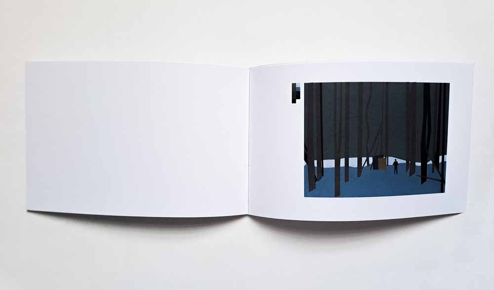
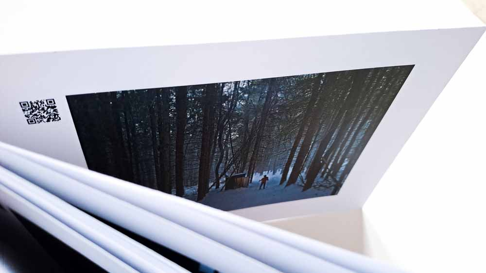
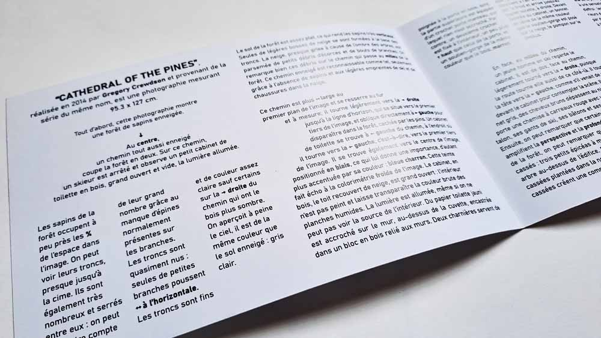
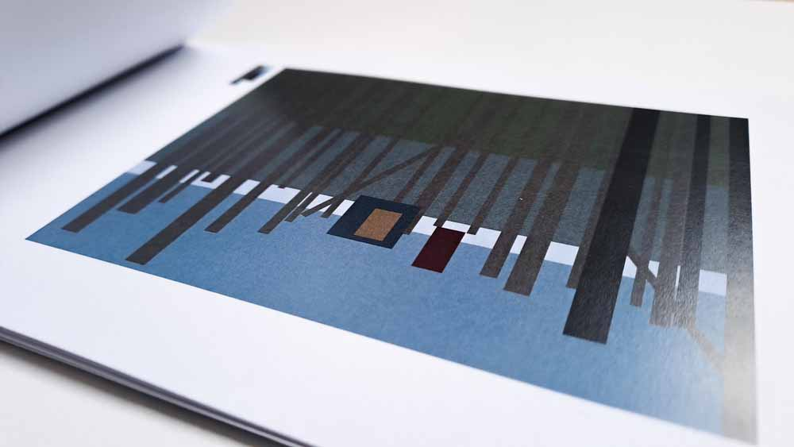

IMAGE ANALYSIS BY IMAGE AND TEXT
In-depth analysis of the Cathedral of the Pines photograph, using image and text.
Through images : flipbook-style analysis, total synthesis of shapes and color palette, gradually becoming more complex, culminating in the original photograph.
Through text : Didactic analysis, from the broadest to the most precise. The intention is to guide the reader through the forest of fir trees, to the point of creating an image with the text thanks to the layout.



